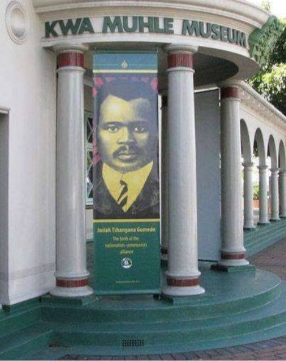

Historical Places
Kwamuhle Museum
It gives the identity within a political content and shows a history experienced by the resident.It also reflect the history and experienced that had never been accessible to people of Durban.
Durban Natural Science Museum
It shows the life size reconstruction of tyrannosarus rex.They use various digram exhibition to show the natural history scenery that is able to show KwaZulu-Natal rich wildlife. You are able to explore the hall of heritage earth science gallery.
Durban Ushaka Marine World

It bring together cultures, like no other place in Africa into a safe, secure and clean environment that resonates the sound of fun, laughter and the spirit of togetherness.